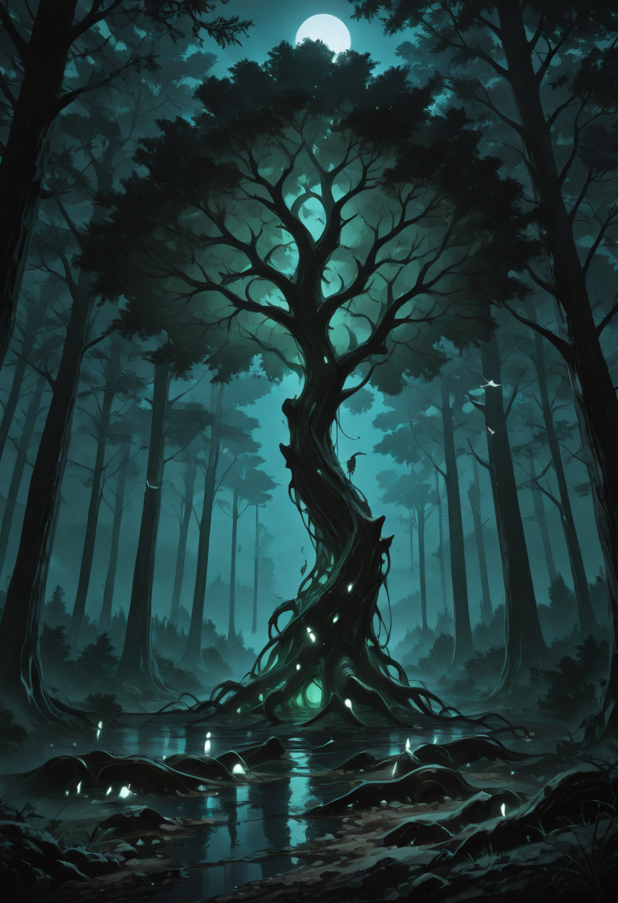
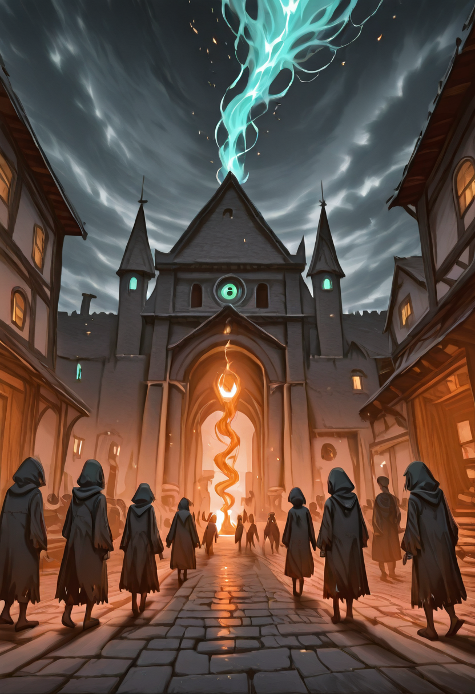
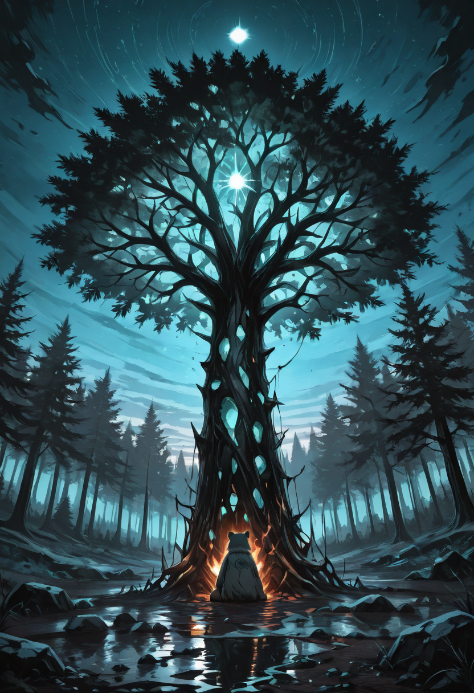
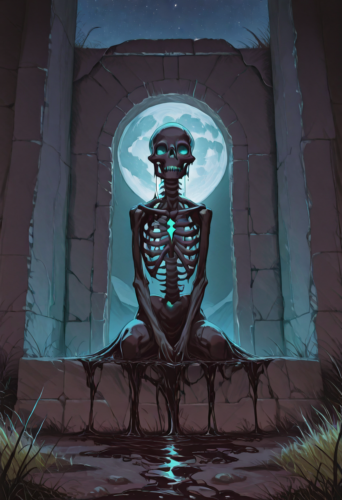
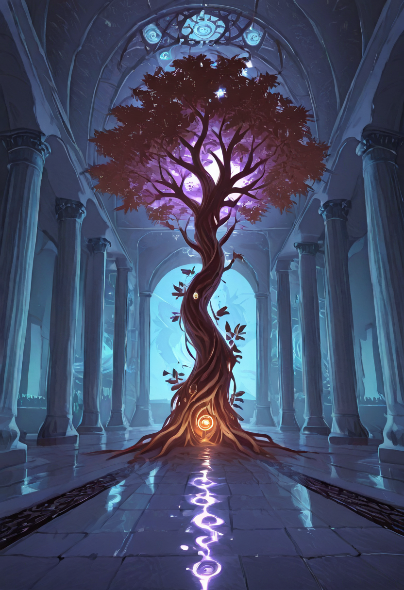
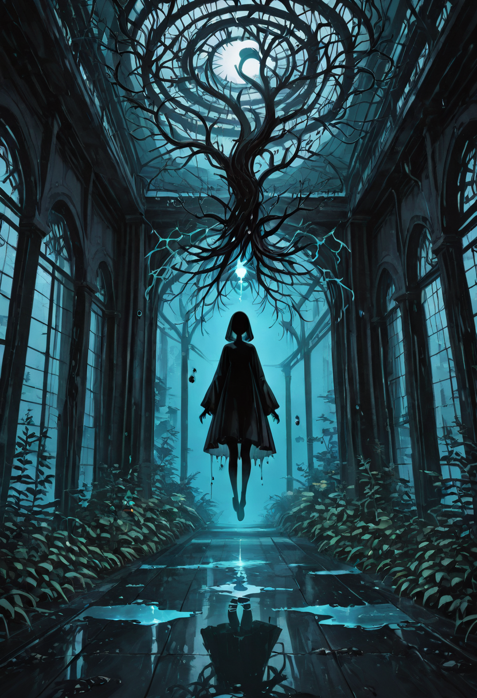
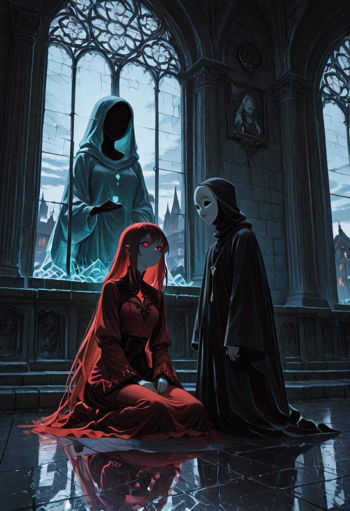

The history of the Forgotten is not written in conquest or triumph, but in survival , a long, silent struggle to exist in a world that feared what it could not understand.

Origins
The origins of the Empire of the Forgotten are lost in the mists of time; there is no certain date of its founding, as if the nation itself emerged from nothingness , or perhaps from a collective memory rejected by others. There is no Founder myth, no single conquering hero. There is only the quiet pulse of the Mother Tree, Malicott, and the slow gathering of souls around her roots.
This is a society unique in its kind, populated entirely by the undead, the resurrected, and a mosaic of living immigrants who have found refuge within its walls. The Empire maintains active diplomatic relations with other factions, earning respect and renown not through force, but through countless acts of charity and support for struggling peoples.
Their alignment is Lawful Neutral. They are not "Good" in the classical sense , they welcome the souls of saints and assassins without moral distinction regarding their past. They are not "Evil," as they reject gratuitous cruelty. They are Lawful because the entire society is built upon one absolute code: The Right to Life.

The First Gifts and the Rejection
In the early centuries, the first undead awakened by Malicott had no nation. They wandered as nomads, seeking to integrate. Naively, they believed their existence was a miracle to be shared. Chronicles tell of the Vallefiore episode, a human village struck by an incurable plague.
A group of the first Forgotten arrived at the village gates bearing medicines created with their own lifeblood, offering to work the infected fields at night , as they were immune to the disease. The desperate villagers accepted the help. But when the plague ended and they saw their saviors in the sunlight, "stitched bodies, pale flesh, glassy eyes", horror overtook gratitude.
They called them "Monsters." They caught them by surprise and burned them in the town square , the very one the undead themselves had rebuilt. The Forgotten could not defend themselves; they died wondering why their help had bred hatred.

The Persecution of Noble Nations
For centuries, the great civilizations of Light and Order used the lands where the Forgotten gathered as a physical and moral dumping ground. What passed for diplomacy was nothing more than open exploitation.
Neighboring kingdoms would send their young squires to hunt the dead as Training Crusades , a rite of passage. Killing a Forgotten was not considered murder, but sport. Criminals, the terminally ill, and the mad were thrown across the borders into the lands of the Forgotten, following the logic that:
For generations, Malicott counseled patience. Her children endured, continued to offer help, and continued to be burned for it. But patience, even for a goddess, has a threshold.

The Night of Closed Doors
Malicott's patience ran out when a neighboring kingdom attempted to use holy magic to purify the entire forest where her children hid. It was in that moment that the Empire stopped trying to be Good and became Lawful. Malicott gave a simultaneous telepathic order to all her children:
When the purifying army arrived, it didn't find weeping victims. It found a wall of bodies. They defeated the invader , not with sadism, but with a surgical and terrifying efficiency. They dismembered the enemy soldiers and used their bones to build the first true fortification of the capital.
That act of defensive brutality shocked the world. The Forgotten sent a single message to the other nations, written in the black sap of trees:

The Great Experiment
The secret history of the Empire revolves around two ancient races: the Elves and the Valkyries. For centuries it was believed they were separate events, but the truth is that both were part of a single, desperate Experiment in Hybridization , deemed impossible by the gods themselves. Malicott made it possible.
The Elves were afflicted by the Silver Rust, a disease that disintegrated the soul. To save them, Malicott ordered the Mailform to physically exterminate the elves before the disease erased their spirits , preserving the souls intact at the cost of the bodies. Concurrently, Malicott welcomed the Valkyries, warriors banished from Valhalla, who arrived bringing martial power but no homeland.
The true experiment was the fusion of the two bloodlines. Malicott hybridized the intact and powerful souls of the saved Elves with the divine, resilient bodies of the fallen Valkyries. This alchemical process created a new supreme lineage: beings possessing the magical grace and sensitivity of elves, combined with the martial power and physical endurance of valkyries. These hybrids are immune to the Silver Rust. They are the pinnacle of evolution in the Empire , living proof that Malicott can rewrite the laws of life and death.

The Famine & The Granary of a Thousand Victims
About a century ago, due to human infiltrators tipping off other empires, the Empire could no longer produce the Ethereal Nectar required to feed the undead. The population began to fade, dying definitively from magical starvation. Malicott was suffering. At the same time, on the Empire's borders, a war of attrition raged between two human kingdoms , thousands dying of disease, infection, and starvation in the trenches, with no one winning.
The Council of Whispers made a decision driven by the ironclad logic of survival. The Empire intervened. Not to bring peace , to survive. In a single night, troops abducted entire legions of wounded and dying soldiers from both sides, along with villages of starving civilians. They were brought inside the Empire.
The Mailform built enormous structures called Greenhouses. The prisoners were put into a magically induced coma , kept in suspension between life and death , while the Mother Tree extended its roots to drain their life force, distilling the aether needed to feed the citizens. When the famine ended, the survivors were returned to the borders: alive, but prematurely aged and hollowed out.

The Crimson Judgment
The coexistence of good and evil souls creates inevitable tensions. The most dramatic episode was the trial of Kael, an Amber Soul who in life had been a ruthless serial killer, and Valerius, an Ethereal Fighter who had been a holy judge. Valerius, upon recovering his memories, recognized Kael's soul from his aura and attempted to execute him in the square, shouting that:
Kael, to defend himself, used forbidden lethal techniques, severely wounding the judge. The people were divided. It was the intervention of a Mailform that restored order with a ruling that set a permanent precedent for the Empire:
Kael was spared but forced to use his skills only in external suicide missions. Valerius was demoted until he learned that the justice of the Empire , survival , supersedes human morality. This event definitively sanctioned the pragmatic neutrality of the faction.